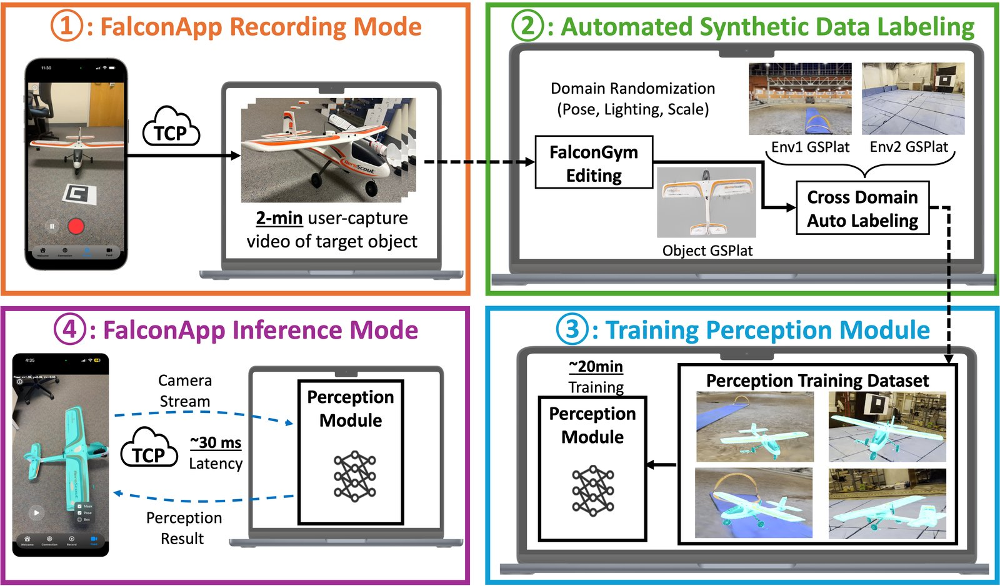
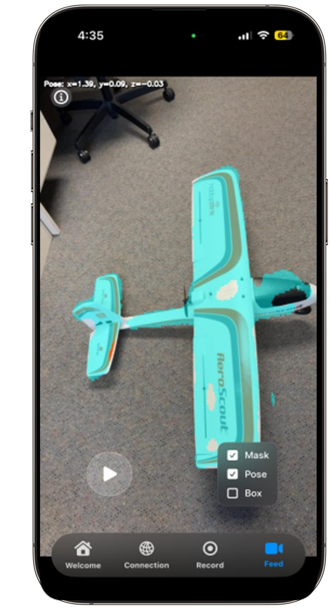
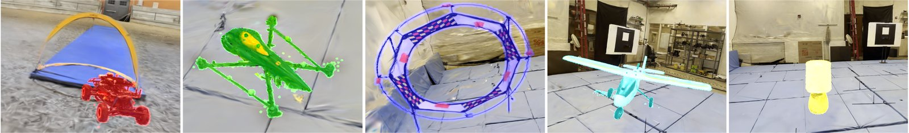
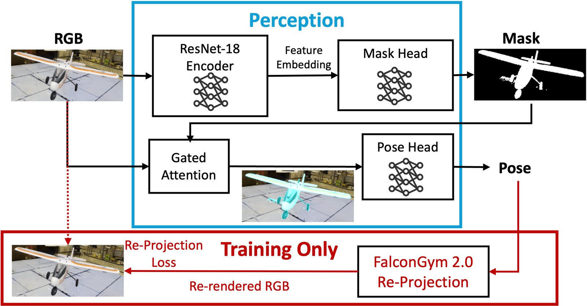
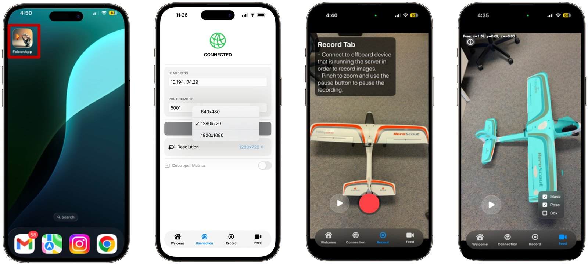

FalconApp pipeline: record on the phone, auto-label in FalconGym 2.0, train, then stream live inference back to the phone.
An iPhone client and a GPU backend wrap the FalconGym 2.0 and FalconTrack tools into one capture-to-inference workflow for new rigid objects.

Swift client streams video and images over TCP; the backend reconstructs, auto-labels, trains, and serves predictions.
Onboarding a new rigid object into a learned perception system requires both labeled training data and the infrastructure that connects capture, training, and inference. We present FalconApp, a mobile client-server pipeline for this workflow. From a two-minute handheld phone capture, a GPU backend reconstructs an editable 3D Gaussian Splatting (GSplat) asset, composites it with diverse backgrounds, generates images with render-aligned masks and 6-DoF poses, and trains an object-specific perception module without per-image manual mask or pose labels. During live use, the phone streams images to the backend for offboard inference and displays the returned predictions.
FalconApp reuses the rendering, auto-labeling, and perception components of FalconGym 2.0 and FalconTrack; the contribution of this work is the Swift mobile client, frontend-backend protocol, workflow orchestration, and system-level characterization of the integrated pipeline. Across five rigid object instances spanning diverse geometry, scale, and symmetry, post-reconstruction data generation and training take 12–23 minutes per object, and the measured client-server inference round trip is 29–32 ms.
FalconApp has lower translation and angular errors than a geometric PnP baseline on four of five objects in simulation and the real world, and lower errors than a per-object-and-background-trained neural pose regressor on all three shared objects. For the rotationally symmetric lamp, simulated results are mixed and both real-world errors are worse than PnP, exposing a limitation of the current pose pipeline.

Auto-labeling in FalconGym 2.0: object Gaussians isolated from the phone capture and composited with randomized backgrounds and poses.

The multi-head perception module (mask, class, 6-DoF pose) trained on the auto-labeled set.

% Citation will be available once the workshop version is public. For now, please reference:
% FalconApp: A Mobile Client-Server Pipeline for Auto-Labeled Object Perception.
% IROS 2026 Workshop.